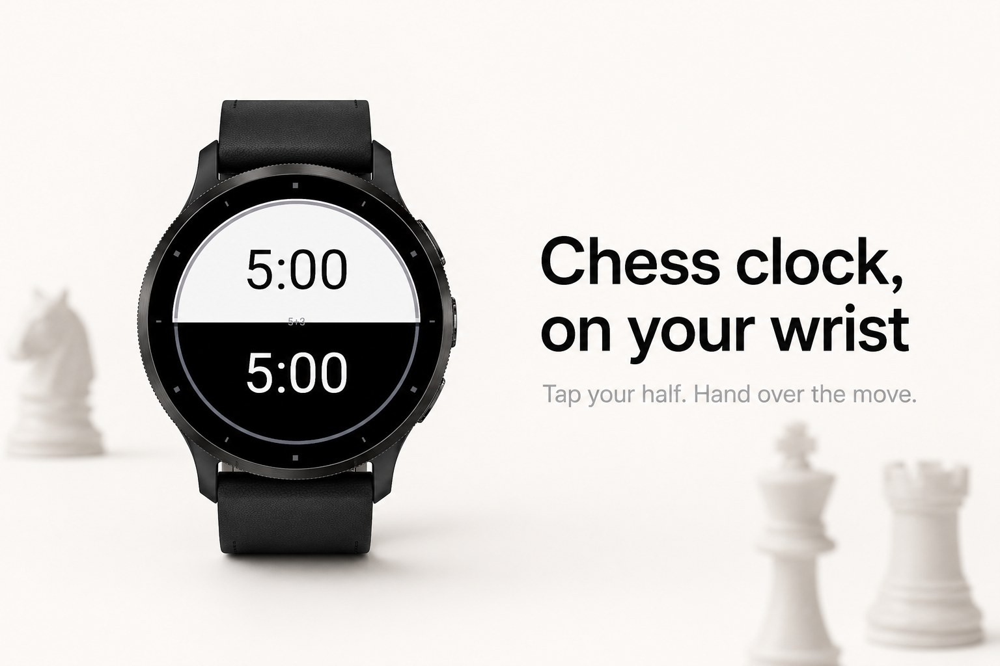
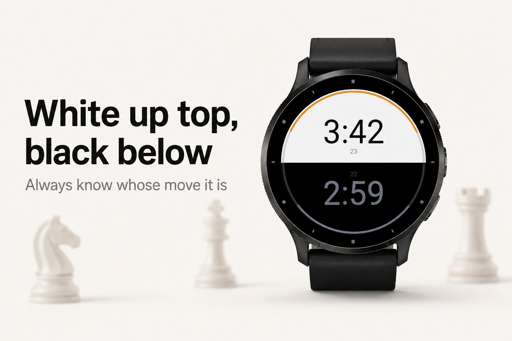
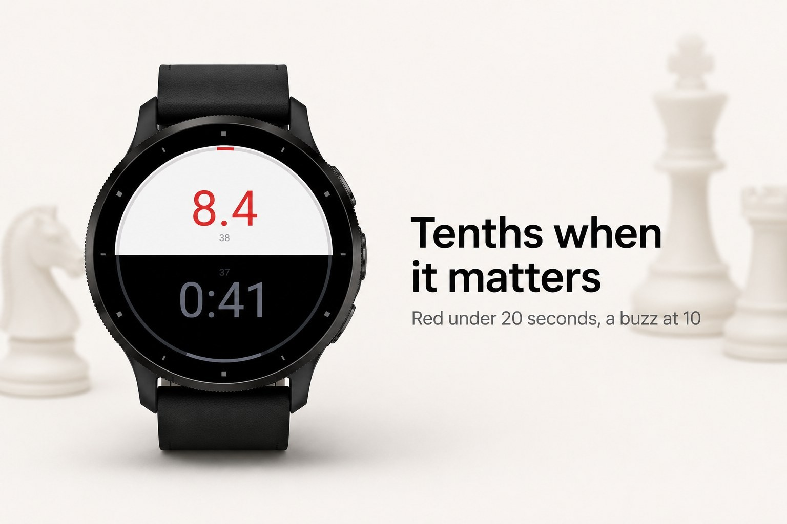
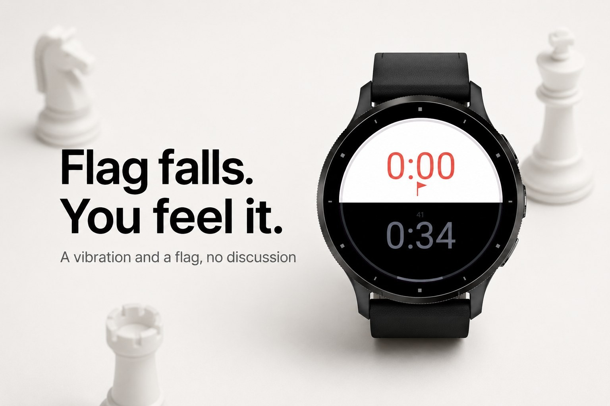
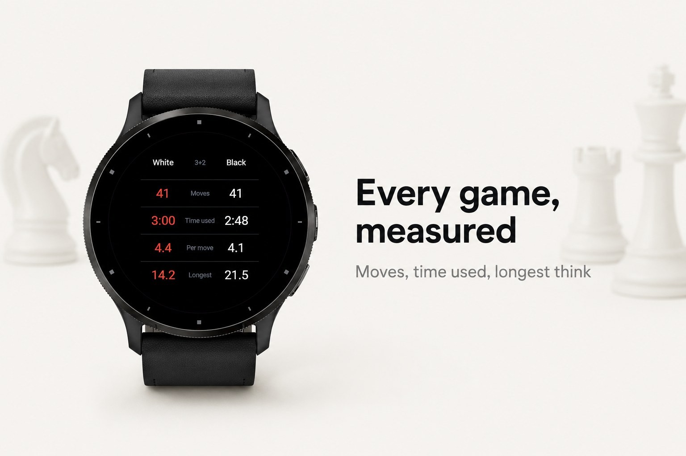

Sport & outdoors · Device app
Chess clock with Fischer, Bronstein and delay.





Zeitnot turns your watch into a chess clock. Lay it on the table, white on top,
black below, and tap your own half when you have moved. No phone, no box of
batteries, nothing to forget on the way to the club.
The two halves are literally white and black, so you always see whose clock is
running. A thin ring along the edge shows how much of the starting time each
player has left. Under twenty seconds the digits turn red and count in tenths,
and your wrist buzzes at one minute and at ten seconds.
with 30 extra minutes after move 40, and more
handicap game
A touchscreen watch. Tap the half you are playing on to pass the move.